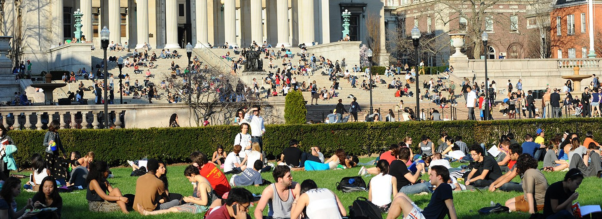
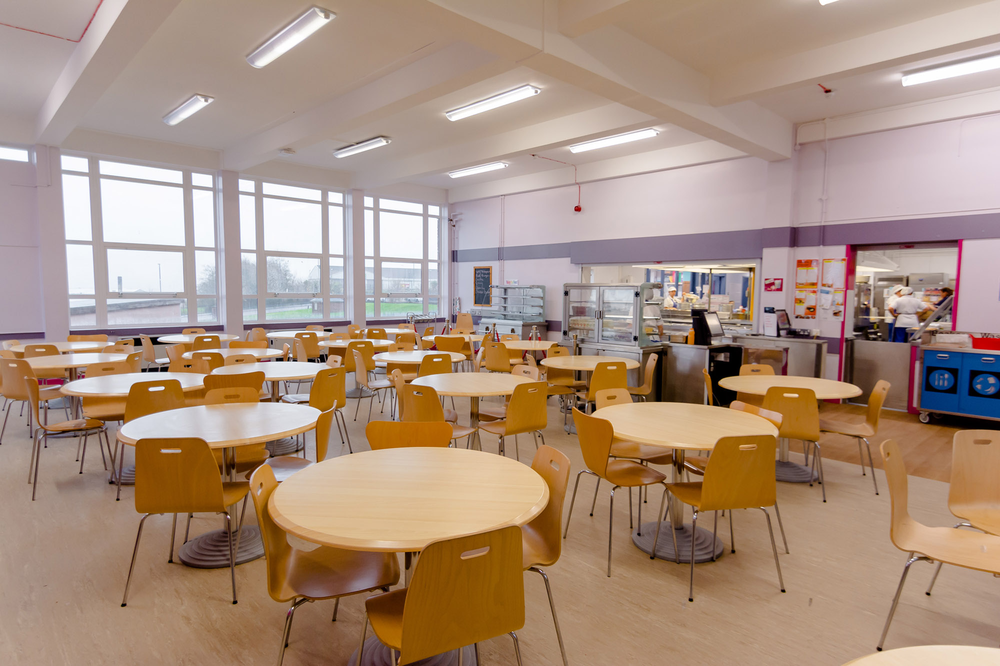
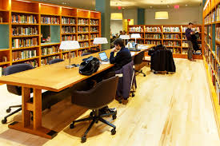

The world's first university is known as Takshashila(600 BC to 500 AD).
Takshashila was in the kingdom of Gandhar in ancient India.
we kept the greatness of the name of Takshashila, We introduce you from World's first university to the World's largest university "Takshashila".
The Takshashila College and University is Situated in new Delhi, India.
we have the greatest collection of books and a lots of extra curricular activities in
College life is a big transition from school life. We go through a lot of changes when we enter college. Our schools were a safe place where we had grown up and spent half our lives. The transition to college is so sudden that you’re no longer protected by your teachers and friends of your school time.
College life poses a lot of challenges in front of you. You are now in a place full of unfamiliar faces where you need to mingle in. It teaches us to socialize and form opinions of our own. In college, students learn their free will and they go on to become more confident and composed.
In school life, we were always dependant on our friends or teachers. College life teaches us to be independent. It makes us stronger and teaches us to fight our own battles. It also makes us serious about our careers. We make decisions that will affect our future all by ourselves, as in school life our parents did it for us.
1.Campus

A college campus is the part and parcel of a college. It is the store house of knowledge. Every college has a campus. So, our college has also a campus which is very rich. There is a big flower garden in front of our college campus. We use campus for playing cricket in the leisure period. Our college campus is very large. It is extended over one hundred acres of land. It stands on the river Bhairab. There are many buildings in our college campus. There are separate buildings for arts, science and commerce faculties. The arts and commerce buildings are on the south side of the college. The science building is near the administrative building. The Shaheed Minar is in front of the administrative building. There are seven hostels in the college campus.
All the hostels are situated on the eastern side of the campus. There are four ponds in the campus. There are different kinds of trees on the banks of the ponds. There are many quarters for the teachers and office stuff on the eastern side of the campus. There are a big mosque and a big temple on the campus. The mosque is on the western side of the campus. Our common campus is a great attraction for us. We are really proud of our college campus.
A college campus is the part and parcel of a college. It is the store house of knowledge. Every college has a campus. So, our college has also a campus which is very rich. There is a big flower garden in front of our college campus. We use campus for playing cricket in the leisure period. Our college campus is very large. It is extended over one hundred acres of land. It stands on the river Bhairab. There are many buildings in our college campus. There are separate buildings for arts, science and commerce faculties. The arts and commerce buildings are on the south side of the college. The science building is near the administrative building.
The Shaheed Minar is in front of the administrative building. There are seven hostels in the college campus. All the hostels are situated on the eastern side of the campus. There are four ponds in the campus. There are different kinds of trees on the banks of the ponds. There are many quarters for the teachers and office stuff on the eastern side of the campus. There are a big mosque and a big temple on the campus. The mosque is on the western side of the campus. Our common campus is a great attraction for us. We are really proud of our college campus.
2.Canteen

A college canteen is a restaurant which is set up and run generally for students to have refreshments there. A college canteen must be situated within the campus or beside the campus of the regarded college. It supplies food and drink to the students and teachers of the college. Our college canteen is situated at the north side of our college. The students have to pass a major part of the day at college so they essentially need to have some refreshments. The college canteen meets this necessity. A college canteen usually supplies snacks, cold drinks, and other fast foods. Sometimes, rice, curry, and various dishes are also available here.
It also supplies tea, coffee, and sweets to the students and the teachers. There are good arrangements for sitting and having relax in a college canteen. Our college canteen is neat and clean. It has a large table and spacious rooms. There are two cooks and three waiters to serve the customers. There is a manager who collects bill from the customers sitting behind the cash box. We often pass happy times in gossiping and having merriment here. But sometimes we have discussion on current political affairs. Sitting in the college canteen, we make a storm in the tea cup in such a manner as if we were great politicians. Our college canteen is a resource of our enjoyment and recreation.
We shall always bear in mind the happy times we passed here even after we leave the college.A college canteen is a restaurant which is set up and run generally for students to have refreshments there. A college canteen must be situated within the campus or beside the campus of the regarded college. It supplies food and drink to the students and teachers of the college. Our college canteen is situated at the north side of our college. The students have to pass a major part of the day at college so they essentially need to have some refreshments. The college canteen meets this necessity. A college canteen usually supplies snacks, cold drinks, and other fast foods. Sometimes, rice, curry, and various dishes are also available here.
It also supplies tea, coffee, and sweets to the students and the teachers. There are good arrangements for sitting and having relax in a college canteen. Our college canteen is neat and clean. It has a large table and spacious rooms. There are two cooks and three waiters to serve the customers. There is a manager who collects bill from the customers sitting behind the cash box. We often pass happy times in gossiping and having merriment here. But sometimes we have discussion on current political affairs. Sitting in the college canteen, we make a storm in the tea cup in such a manner as if we were great politicians. Our college canteen is a resource of our enjoyment and recreation. We shall always bear in mind the happy times we passed here even after we leave the college.
3.Library

A good college is one which provides an ideal environment for studies. Such an environment is not provided by costly benches and tables. It is provided by dedicated teachers and a good library. I am glad to say that I have been lucky enough to study in such an institution. Our college’s library is made up of three hall-rooms; one of which is a reading-room. The other rooms are made up of books which are neatly arranged on the shelves. A librarian sits at a counter and issues books to us. He is helped by two assistants. They are vigilant so that books are kept in good condition. The college authorities issue library cards to us so that we can borrow books. However, we have to return books within a week. In this way, everyone gets a chance to borrow the books of this choice. During college hours, we may study in the reading room.
As silence reigns supreme, we feel like sitting there. Our college library is of great help to our teachers too, because they can consult reference books and thereby present their subjects in a more enlightened way. They may select books from a rich collection of five thousand books. There are old and rare books as well as latest editions. Books are added to this collection every year so that students and teachers may keep pace with the latest theories and thoughts. I think that the college library has provided the students and teachers with an ideal place for widening their knowledge-and although our college doesn’t look special, the library has made it a special place of learning for us.A good college is one which provides an ideal environment for studies. Such an environment is not provided by costly benches and tables. It is provided by dedicated teachers and a good library.
I am glad to say that I have been lucky enough to study in such an institution. Our college’s library is made up of three hall-rooms; one of which is a reading-room. The other rooms are made up of books which are neatly arranged on the shelves. A librarian sits at a counter and issues books to us. He is helped by two assistants. They are vigilant so that books are kept in good condition. The college authorities issue library cards to us so that we can borrow books. However, we have to return books within a week. In this way, everyone gets a chance to borrow the books of this choice. During college hours, we may study in the reading room. As silence reigns supreme, we feel like sitting there. Our college library is of great help to our teachers too, because they can consult reference books and thereby present their subjects in a more enlightened way. They may select books from a rich collection of five thousand books. There are old and rare books as well as latest editions.
Books are added to this collection every year so that students and teachers may keep pace with the latest theories and thoughts. I think that the college library has provided the students and teachers with an ideal place for widening their knowledge-and although our college doesn’t look special, the library has made it a special place of learning for us.